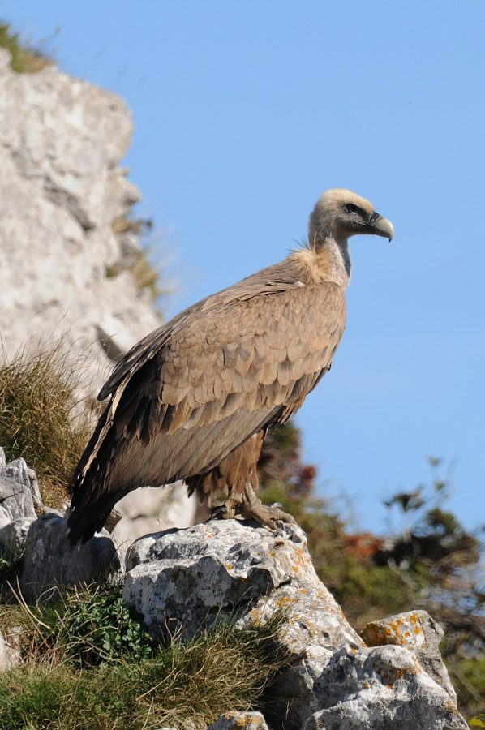

ग्रिफॉन गिद्धGriffon Vulture
Gyps fulvus · Accipitridae · BRD-0326

- Scientific name वैज्ञानिक नाम
- Gyps fulvus (Hablizl, 1783)
- Family कुल
- Accipitridae
- Hindi हिंदी
- ग्रिफॉन गिद्ध
- Local names स्थानीय नाम
- griffon vulture, eurasian griffon, fulvous vulture
- Status here यहाँ की स्थिति
- native
- Movement आवागमन
- Winter visitor
- Known from कहाँ दर्ज
- Others have published records from the wider Awadh–Purvanchal plain, none yet from Basti–Ayodhya अवध–पूर्वांचल से दूसरों के प्रकाशित अभिलेख, बस्ती–अयोध्या से अभी नहीं
- IUCN IUCN
- LC
- Review समीक्षा
- not yet reviewed
When to look कब देखें
Winter visitor शीतकालीन प्रवासी. Expected mainly in October, November, December, January, February, March. मुख्यतः अक्टूबर, नवंबर, दिसंबर, जनवरी, फ़रवरी, मार्च में अपेक्षित।
Regular winter visitor from Himalayan and central Asian breeding areas; arrives in late autumn and departs by early spring. All migrants and visitors →
Tell it apart from इनसे अलग पहचानें
ग्रिफॉन गिद्ध / Griffon Vulture
Gyps fulvus (Hablizl, 1783) — Accipitridae
ग्रिफॉन गिद्ध — सर्दियों में मध्य एशिया और हिमालय की चोटियों से उतरकर उत्तर भारत के मैदानी इलाकों में आने वाला एक विशालकाय, भारी शिकारी-मुर्दाखोर पक्षी है। इसके विशाल चौड़े डैने उड़ते समय हवा में तैरते हुए दिखाई देते हैं। इसका शरीर रेतीले-भूरे या हल्के बादामी रंग का होता है, गर्दन लंबी और सफेद रोयेंदार बालों से ढकी होती है, और गर्दन के आधार पर सफेद पंखों का एक सुंदर कॉलर (रफ) बना होता है। यह मरे हुए मवेशियों के शवों को खाकर मैदानों को संक्रामक बीमारियों से मुक्त रखता है।
Quick Identification त्वरित पहचान
| Feature | Description |
|---|---|
| Habit | Huge, heavy, broad-winged soaring scavenger of open plains and river valleys |
| Head and Neck | Naked pale grey head covered with fine white down; bare crop patch |
| Ruff | Conspicuous fluffy white or buffish ruff of downy feathers around lower neck |
| Plumage | Warm sandy-buff or fulvous-brown body contrasting with blackish flight feathers |
| Flight Profile | Enormous broad wings with deeply fingered primaries held in a shallow V or flat |
| Bill | Massive, deep, powerful hooked horn-grey or pale yellow bill |
| Underwing | Distinct pale underwing coverts contrasting sharply with dark flight feathers |
Field tip: Watch soaring thermal flocks over open plains or cattle carcass dumps during mid-winter. The immense wingspan, sandy-tawny body, white neck ruff, and dark flight feathers distinguish it from other vultures.
हिंदी:
यह एक बहुत बड़ा गिद्ध है जिसके पंख बेहद चौड़े और पूंछ छोटी होती है।
इसकी लंबी गर्दन पर सफेद रोएं और आधार पर सफेद कॉलर जैसा घेरा होता है।
यह आसमान में बिना पंख हिलाए घंटों गोल-गोल चक्कर काटता रहता है।
Morphology आकारिकी
Measurements as given by Baker (1928):
| Measurement | Range |
|---|---|
| Wing | Wing 675 to 740 mm. (Baker 1928 as Gyps fulvus) |
The Griffon Vulture is among the largest birds of prey in the Old World. The body is heavily built and muscular, supported by massive broad wings adapted for long-distance thermal soaring. The head is small and covered with short white down, while the long, flexible neck is sparsely clad in fine whitish bristles.
At the base of the neck lies a full, luxurious ruff composed of soft, lanceolate white feathers in adults, which transitions to brown lanceolate feathers in immatures. The mantle, scapulars, and body plumage are warm sandy-tawny or pale isabelline-brown.
The flight feathers and rectrices are contrasting dark slate-black. The bill is remarkably robust, hooked, and laterally compressed, suited for tearing open tough skin and sinew. The bare skin around the eye and nostrils is bluish-grey. The feet are pale greyish, armed with strong but relatively blunt claws.
Vocalisations. Mostly silent while soaring, but extraordinarily vocal at carcasses, producing guttural hissing, loud cackling, harsh squeals, and grunting screeches during feeding squabbles.
हिंदी:
इसके पंखों का फैलाव 675 से 740 मिमी तक होता है जो हवा में विशालकाय दिखाई देते हैं।
इसकी चोंच बेहद मजबूत और आगे से मुड़ी हुई होती है जिससे यह कठोर मांस और खाल को फाड़ सकता है।
शवों पर भोजन के समय यह तेज फुफकारने और चीखने जैसी आवाजें निकालता है।
Behaviour & Ecology व्यवहार और पारिस्थितिकी
Gyps fulvus relies entirely upon rising thermal air currents to gain altitude, typically taking flight only after mid-morning sun has sufficiently warmed the earth. Individuals soar at immense altitudes across dozens of kilometres, scanning the ground with extraordinary visual acuity for dead animals or aggregations of other scavengers.
When a carcass is located, vultures descend in rapid spiralling dives with a rushing roar of wind through their flight feathers. At the feeding site, strict feeding hierarchies prevail, with the heavier griffons displacing smaller vultures such as the Egyptian Vulture. Dozens of vultures can clean a massive domestic carcass down to bare bones in less than an hour.
हिंदी:
यह पक्षी धूप खिलने के बाद गर्म हवा के थपेड़ों (थर्मल) के सहारे आकाश में बहुत ऊपर तक उड़ता है।
किसी मरे हुए मवेशी को देखकर यह तेजी से नीचे उतरता है और कुछ ही देर में पूरा शव साफ कर देता है।
Life Cycle / Phenology जीवन चक्र
In the plains the breeding season lasts from November to early March, and from February to early April in Kashmir (Baker 1928, p. 13). In eastern Uttar Pradesh, it occurs in winter.
The Indian Griffon breeds in small colonies on cliff ledges, making rough platform nests of sticks and branches that are occupied for successive seasons. A single egg is laid and incubated for several weeks until hatching. The young bird remains dependent on parental care until fledging.
हिंदी:
मैदानों में इसका प्रजनन काल नवंबर से मार्च तक और कश्मीर में फरवरी से अप्रैल तक होता है (बेकर 1928)।
यह चट्टानों की कंदराओं में टहनियों से घोंसला बनाता है और केवल एक अंडा देता है।
Host Plants or Prey आहार
The Griffon Vulture is an obligate scavenger specializing entirely in the flesh and viscera of large mammalian carcasses:
- Dead livestock including cattle (Bos indicus), water buffalo (Bubalus bubalis), and goats
- Dead wild ungulates including the Spotted Deer (Axis axis) and Nilgai
- Carcass dumps and bone yards across the plains
हिंदी:
इसका मुख्य आहार गाय, भैंस, नीलगाय और हिरणों के शव हैं।
यह केवल मृत पशुओं का मांस खाता है।
Predators / Natural Enemies शत्रु व परभक्षी
Adult vultures have no natural predators in flight. No source opened for this atlas names a specific predator of this bird.
हिंदी:
उड़ते हुए गिद्ध का कोई प्राकृतिक शिकारी नहीं होता। इस एटलस के लिए खोले गए किसी स्रोत में इस पक्षी के किसी विशिष्ट शिकारी का नाम नहीं है।
Agricultural / Human Relevance कृषि व मानव संदर्भ
The Griffon Vulture feeds entirely on carrion, scavenging large mammalian carcasses in open country (Baker 1928, p. 13). It is protected under the Wildlife (Protection) Act, 1972.
हिंदी:
ग्रिफन वल्चर पूरी तरह से मृत मवेशियों और शवों (सड़े मांस) को खाकर रहता है (बेकर 1928)। यह वन्यजीव (संरक्षण) अधिनियम, 1972 के तहत संरक्षित है।
Expected Locally स्थानीय रूप से अपेक्षित
Not a field record. Written from published accounts for eastern Uttar Pradesh. No confirmed local sighting yet — if you have seen it, that is what the atlas needs.
अभी तक स्थानीय पुष्टि नहीं। यह विवरण प्रकाशित स्रोतों से है, किसी अवलोकन से नहीं।
Search along rural carcass disposal sites, pastoral grasslands, and broad sandy riverbeds during mid-winter.
GBIF holds published records from the wider Awadh–Purvanchal plain, none yet from Basti–Ayodhya.
A first record would be a photograph of a soaring or grounded individual with place and date, sent through the About page.
Distribution वितरण
Global and historical range: Widespread across the southern Palearctic, from the Iberian Peninsula and North Africa through southern Europe, the Middle East, Central Asia, and the Himalayas into northern India.
Regional status: Regular winter visitor in small numbers across open plains, livestock grazing tracts, and river floodplains of eastern Uttar Pradesh.
हिंदी:
यह दक्षिणी यूरोप, मध्य एशिया और हिमालय के पहाड़ों में पाया जाता है।
सर्दियों में यह उत्तर प्रदेश के मैदानी इलाकों और नदियों के किनारे भोजन की तलाश में आता है।
Research Questions शोध प्रश्न
- How do winter arrival dates and flock sizes of Gyps fulvus correlate with northern Himalayan snowfall intensity? / हिमालय में भारी बर्फबारी और ठंड का उत्तर प्रदेश के मैदानों में ग्रिफॉन गिद्धों के आगमन पर क्या प्रभाव पड़ता है?
- What is the prevalence of toxic veterinary drug residues among livestock carcasses available to wintering vultures in eastern Uttar Pradesh? / पूर्वांचल के मवेशी शवों में गिद्धों के लिए जानलेवा दवाओं की मौजूदगी का क्या स्तर है?
- What are the flight speeds and soaring altitudes maintained during long-distance trans-plain foraging movements?
- How do interspecific dominance interactions unfold between wintering Eurasian Griffons and resident Himalayan Griffons at feeding sites?
- Can satellite telemetry tracking identify critical winter foraging corridors and night-roosting trees across the Gangetic plain?
Similar Species मिलती-जुलती प्रजातियाँ
| Species | How to tell apart | हिंदी | |
|---|---|---|---|
| [[white_rumped_vulture\ | White-rumped Vulture]] (Gyps bengalensis) | Smaller and much darker; adults blackish with a white rump and a white bar on the underwing | गिद्ध |
| [[red_headed_vulture\ | Red-headed Vulture]] (Sarcogyps calvus) | Black, with a bare red head and neck, red legs and white patches at the thighs | राज गिद्ध |
Field rule: The immense wingspan, sandy-tawny body plumage, contrasting dark flight feathers, and distinct white ruff around the neck distinguish the Griffon Vulture.
हिंदी:
विशालकाय डैने, रेतीला-भूरा शरीर, काले पंख और गर्दन के पास सफेद रोएंदार कॉलर इसकी स्पष्ट पहचान हैं।
Taxonomy & Classification वर्गीकरण
Original description. Described by Carl Ludwig Hablizl in 1783 in Neue Nordische Beyträge zur physikalischen und geographischen Erd- und Völkerbeschreibung, Naturgeschichte und Oekonomie (vol. 4, p. 58), under the basionym Vultur fulvus.
Synonyms and historical names. Stuart Baker (1928, p. 9) treated the species under Gyps fulvus, distinguishing the western and eastern races.
Subspecies. Two subspecies are recognized: the nominate western race Gyps fulvus fulvus (Hablizl, 1783) and the eastern Asian race Gyps fulvus fulvescens Hume, 1869, which winters across northern India.
Family and order placement. Order Accipitriformes; family Accipitridae (hawks, eagles, and vultures); genus Gyps.
IUCN status rationale. Assessed as Least Concern (LC) on the IUCN Red List due to its immense global range and increasing or stable populations across parts of Europe and Central Asia.
हिंदी:
हाबलित्ज़ ने 1783 में इसका नामकरण किया था। यह एक्सीपिट्रिडी (शिकारी पक्षी) कुल का सदस्य है और वैश्विक रूप से संकटमुक्त (LC) है।
Photo Gallery फोटो गैलरी
No photos yet — add field photos to media/species/griffon_vulture/ and run node scripts/sync_photos.js.
Photos needed आवश्यक फोटो
- [ ] Adult soaring high on flat wings showing underwing contrast (आकाश में उड़ता विशाल गिद्ध)
- [ ] Individual feeding on a rural carcass showing white neck ruff (शव पर भोजन करता गिद्ध)
References संदर्भ
- Hablizl, C. L. (1783). Neue Nordische Beyträge zur physikalischen und geographischen Erd- und Völkerbeschreibung, vol. 4, p. 58 (as Vultur fulvus).
- Baker, E. C. S. (1928). The Fauna of British India, Including Ceylon and Burma. Birds. Vol. 5. Taylor & Francis, London, p. 9 (as Gyps fulvus).
- Ali, S. & Ripley, S. D. (1987). Compact Handbook of the Birds of India and Pakistan. Oxford University Press, New Delhi.
- BirdLife International (2021). Gyps fulvus. The IUCN Red List of Threatened Species 2021: e.T22695219A205216110.
- Wildlife (Protection) Act, 1972 (as amended in 2022). Government of India, Schedule I.
- GBIF Occurrence Data — Gyps fulvus (Hablizl, 1783), India (2025).
Source file: species/fauna/birds/griffon_vulture.md